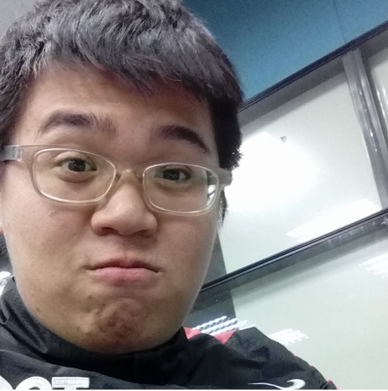

班級: 資管四甲
學號: 10444118
心得:
這堂課到目前為止真的交了不少有關於網頁前段以及html的的程式碼，雖然要牢記與應用還需要不少時間，不過真受益良多； 這次拍攝影片也非常不容易，全體組員都能準時且合力分工的完成每一個份內的工作，也要感謝組員幫助我這個不太會寫網頁的人， 有關於程式碼的應用以及改錯還有網頁的支持。
|
姓名: 譚皓仁 班級: 資管四甲 學號: 10425274 心得: 時日太快，不經不覺已經來到期中了，這次期中的報告，是為了了解自己是不是真正的完成掌握新知識的理解和吸收。 因此，我希望自己能在接下來的學習過程中，勤動腦，多思考，多一點如SCSS/SASS，這可以大大減少寫html的時間。 |
|
姓名: 李浩君 班級: 資管四甲 學號: 10444151 心得: 雖然之前有修過網程課程，可是對於CSS以及排版沒有過多研究， 且距離上次接觸網頁已經是兩年前的事了，所以略顯陌生，此次 其中可順便複習網頁的編寫。 |
|  |
姓名: 蕭世傑 班級: 資管四甲 學號: 10444152 心得: 這次的期中專案讓我更好的去理解CSS在網頁中所扮演的角色，而影片拍攝與剪輯讓我更加地得心應手，讓我之後有更多的方法可以推廣不同的東西，對了健身房真的是個好地方喔 |
|
|
姓名: 黃鈺程 班級: 資管四甲 學號: 10444118 心得: 這堂課到目前為止真的交了不少有關於網頁前段以及html的的程式碼，雖然要牢記與應用還需要不少時間，不過真受益良多； 這次拍攝影片也非常不容易，全體組員都能準時且合力分工的完成每一個份內的工作，也要感謝組員幫助我這個不太會寫網頁的人， 有關於程式碼的應用以及改錯還有網頁的支持。 |
老年方愛粥
師散入重城
我乏濟時略
們水抱山城
想望崑崙丘
畢作香火翁
業坐對寒灰